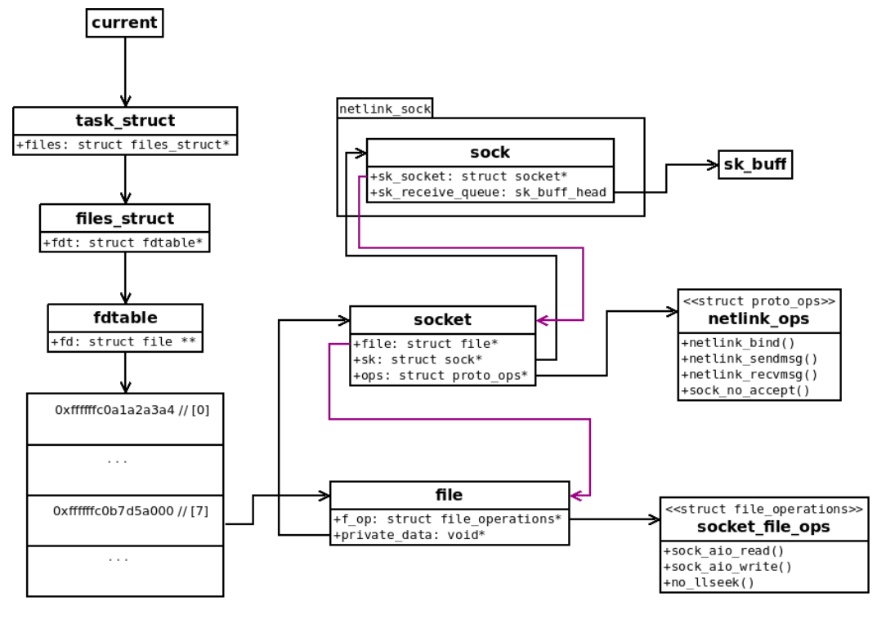

Linux内核中的 POSIX消息队列实现中存在一个UAF漏洞CVE-2017-11176。攻击者可以利用该漏洞导致拒绝服务或执行任意代码。
写在本篇文章的一点感触，最近分析了好几个漏洞，也逐渐总结出分析复现漏洞时，自己应该更注重的关键点：1. 清楚明白漏洞产生原因，代码流程理解需要更加透彻；2. 漏洞触发方法，需要考虑如何从用户角度去触发该漏洞，需要绕过的检查、保护；3. 漏洞利用手法，考虑利用手法的原理、其中关键点，以及是否有其他方法；4. EXP的写法，包括触发漏洞代码，与漏洞利用代码，最好是自己能够亲自写一遍EXP。总之，漏洞分析并不只是为了跟随前人脚步，而是要从中积累学习并有自己的独立思考。
漏洞分析
基础知识
fd, file object, fdt, file_struct
在 Linux中，有 7种文件：常规、目录、链接、字设备、块设备、fifo和 socket，他们都用文件描述符来表示。文件描述符本质上是一个整数，只有对特定进程才有意义。
fd：对于给定进程而言，是一个整数
file object(struct file)：表示一个已经打开的文件
1 | struct file { |
文件描述符和file结构体指针的映射表被称作 file descriptor table(fdt)，其并不是一对一映射，可能存在多个描述符映射到同一结构体指针的情况，因此 file结构体中有 f_count成员来记录引用情况。 FDT的结构体被称为 fdtable，其就是一个 array。
1 | struct fdtable { |
file_struct：将 fdt 链接到进程内部，file_struct 可以在多个线程之间共享。
1 | struct files_struct { |
内核需要经常关注的虚函数表 (VFT)，名为 struct file_operations：
1 | // [include/linux/fs.h] |
由于 Linux中所有东西都被看作文件，但其类型又不一样，所有有着不一样的file operations，常被称作 f_ops：
1 | if (file->f_op->read) |
socket, sock, skb
创建 socket时，例如调用 socket syscall，就会创建一个 struct file类型的 socket文件对象，然后创建一个结构体 socket_file_ops，里面包含了对这个 file的操作，并且将它的操作 file operations嵌入其中。
1 | static const struct file_operations socket_file_ops = { |
socket实际上实现了许多 BSD socket api，这些 api都被嵌入到一个虚拟函数表 virtual function table的结构体中，结构体被称为 proto_ops，每一种类型的 socket都执行他们自己的 proto_ops：
1 | struct proto_ops { |
当一个 BSD-style syscall被调用的时候，一般流程如下：
- 从 fdt 文件描述符表中，检索对应的
struct file(文件对象) - 从文件对象中找到
struct socket - 调用对应的
proto_ops进行回调
struct socket实际上在网络栈的最顶层，通常再进行一些 sending/receiving data操作时需要控制底层，因此 socket对象里面有一个指针指向了 sock对象(struct sock)。
1 | struct socket { |
当网卡收到一个来自外界的数据包时，网卡驱动会把这个packet(排队)放到 receiving buf中，这个 packet会一直在这个缓冲区内，直到应用程序决定接受(recvmsg())它。相反，当应用程序想要发送(sendmsg())一个数据包，这个 packet会被放到 sending buf内，一旦收到通知，网卡驱动就会将其发送出去。
这些 packet也被称为 struct sk_buff或者 skb，sending/receiving buf基本上是一个 skb的双向链表。
1 | struct sock { |
从上面的结构体可以看出，sock对象中也引用了 socket对象 (sk_socket)，socket对象也引用了 sock对象(sk)，同理 struct socket中引用了 file对象(file)，struct file中引用了 socket对象(private_data)，这种双向机制使得数据可以贯通整个网络栈。
netlink socket
一种特殊的 socket，允许用户空间与 kernel通信，可以用来修改路由表，接受SElinux事件通知，甚至可以与其他用户空间进程进行通信。因为 struct与 struct socket都属于支持各种类型 socket的通用数据结构，从 socket对象的观点来看，proto_ops字段需要定义，对于 netlink家族来说，BSD-style socket的操作都是 netlink_ops：
1 | static const struct proto_ops netlink_ops = { |
从 socket的角度来看，在 netlink的例子中，又有了专门的实现：
1 | struct netlink_sock { |
netlink_sock是由一个sock对象增加了许多附加属性。
上述三种结构体的总体架构如下图所示：

引用计数
为了减少内核内存泄露和防止UAF，大多数Linux的数据结构中有 引用计数ref counter，为 atomic_t类型 int，通过如下原子操作对 ref counter进行操作：
- atomic_inc()
- atomic_add()
- atomic_dec_and_test()
当一个对象被其他对象引用时，引用计数器+1，当删除引用后-1，当引用计数器为0时，就会释放该对象。Linux内核通过普通接口有多种手段处理 ref counter(kref，kobject)。但是其没有系统地使用操作的对象中已有的 refcounter helper，而是使用 *_get()和 *_put()等函数。
在每个例子中，每个对象都有不同的 helper名字：
- struct sock：sock_hold()，sock_put()
- struct file：fget(), fput()
正常情况下，对象的引用与释放是平衡的，但是当失去平衡的时候就会出现 memory corruption（内存破坏）
如下面的例子：
- 引用技术减少两次：uaf
- 引用计数增加两次：memory leak or int-overflow leading to uaf
漏洞原因
通过 path可以发现，漏洞产生的原因是因为没有把 sock对象的指针置为 NULL:
1 | diff --git a/ipc/mqueue.c b/ipc/mqueue.c |
这段代码出现在 mq_notify函数中，return to the code->
1 | SYSCALL_DEFINE2(mq_notify, mqd_t, mqdes, |
mq_notify()函数，参数如下：
mdqes：消息队列描述符notification：(1) not null：表示消息到达，且先前队列为空；(2)null: 表示撤销已注册的通知
通知方式：产生一个信号，创建一个线程执行一个函数。
通过分析上面代码可知，mq_notify()有如下几条途径：
u_notification为空时：调用remove_notification()撤销已注册通知u_notification不为空时：判断通知类型：SIGV_THREAD：申请内存空间并将用户空间通知拷贝到内核(nc)- 将
nc压入sock队列中 - 调用
fdget函数获取对应的fd - 调用
netlink_getsockbyfilp函数 从fd对应的filp中获取对应的sock对象 - 将数据包与
sock相关联 - 根据返回值选择
continue/goto retry/goto out->goto retry； - 如果返回值为1， 那么会进入
retry流程，也就从上述 步骤3 开始继续执行； - 如果返回值为0，则会将
sock置为null，同时走向out流程。 - 在
out流程中，会判断sock的值。如果sock有值，则调用netlink_detachskb。如果nc有值则调用dev_kfree_skb。 - 如果
close这个file，那么将会直接goto out，此时sock不为空，会执行netlink_datachskb()，导致uaf
其中 netlink_getsockbyfilp函数，如下所示。通过 file_inode函数从 filp中获取 inode结点。然后调用 SOCKET_I处理 inode。然后判断 sock->sk_family是否为 AF_NETLINK。最后调用 sock_hold增加 sock的引用计数，此时 sock的引用计数为 1。
1 | struct sock *netlink_getsockbyfilp(struct file *filp) |
SOCKET_I函数如下所示，调用 container_of处理 inode。
1 | static inline struct socket *SOCKET_I(struct inode *inode) |
这里container_of是一个宏定义，其作用是在 socket_alloc中找出其 sock成员。
在 mq_notify()函数中，还会执行 一个函数 netlink_attachskb函数，该函数是将 skb绑定到 netlink socket上，代码如下：
1 | int netlink_attachskb(struct sock *sk, struct sk_buff *skb, |
在 netlink_attachskb函数中，主要逻辑如下：
判断
atomic_read(&sk->sk_rmem_alloc)是否大于sk->sk_rcvbuf，或者test_bit(NETLINK_CONGESTED, &nlk->state))是否为真，和netlink_skb_is_mmaped(skb)是否为空；其中netlink_skb_is_mmaped(skb)返回结构肯定为True。：- 如果进入该分支，首先会调用
DECLARE_WAITQUEUE声明一个等待队列； - 判断
timeo是否为空，这里不为空，不进入后续分支； - 随后调用
__set_current_state设置当前task状态TASK_INTERRUPTIBLE； - 然后调用
add_wait_queue将当前线程添加到wait队列； - 然后进入判断，由于
(atomic_read(&sk->sk_rmem_alloc) > sk->sk_rcvbuf || test_bit(NETLINK_CONGESTED, &nlk->state))这个判断在最开始已经为真，所以只需要确定sock_flag是否为sock_DEAD。若为真，则调用schedule_timeout进行cpu调度，当前线程进入block状态； - 调用
__set_current_state函数，设置当前task为TASK_RUNNING； - 调用
remove_wait_queue函数，将当前线程从wait队列中移除； - 调用
sock_put函数，将sock的引用计数减1； - 最后调用
signal_pending判断当前current，若为真，则调用kfree_skb释放skb； - 最后返回 1。
- 如果进入该分支，首先会调用
如果不进入该分支，则会调用
netlink_skb_set_owner_r函数：- 会调用
atomic_add将sk->sk_rmem_alloc加上skb->truesize，也就是扩大了sk->sk_rmem_alloc大小。
- 会调用
那么，现在分析一下，上述第一步中的判断是否能通过。首先 netlink_skb_is_mmaped(skb)肯定为True，所以 只需要使得 (atomic_read(&sk->sk_rmem_alloc) > sk->sk_rcvbuf || test_bit(NETLINK_CONGESTED, &nlk->state))为真就行。 这里 最开始 sk->sk_rmem_alloc的值有可能为 0， 所以不一定能通过。
而为了触发漏洞 我们必须使得 netlink_attachskb的返回值为 1， 也就是必须使得 进入该分支。那么这里就有两种思路：
- 增大
sk->sk_rmem_alloc的值 - 减小
sk->sk_rcvbuf的值
触发漏洞
由上述代码可知 ret==1时触发漏洞，ret是 netlink_attachskb的返回值，分析一下 mq_notify系统调用执行到 netlink_attachskb的条件：
u_notification != NULLnotification.sigev_notify = SIGEV_THREADnotification.sigev_value.sival_ptr必须有效notification.sigev_signo提供一个有效的文件描述符
到达 netlink_attachskb函数。
增大 sk->sk_rmem_alloc
在 netlink_attachskb函数中，首先会对 sk->sk_rmem_alloc与 sk->sk_recvbuf函数进行判断，如果判断不通过，则直接执行 netlink_set_owner_r函数：
1 | if ((atomic_read(&sk->sk_rmem_alloc) > sk->sk_rcvbuf || |
sk_rmem_alloc可以视为 sk缓冲区的当前大小，sk_rcvbuf是 sk的理论大小，因为 sk_rmem_alloc有等于0的情况，因此 sk_rcvbuf可能需要 <0 才可以，在 sock_setsockopt函数中可以设置 sk_rcvbuf的值，但是它的值始终会是一个 >0的值，因此这个判断很难以通过。会直接执行 netlink_skb_set_owner_r。
那么是否能够通过多次调用 mq_notify()函数，第一次直接执行 netlink_skb_set_owner_r来增大 sk_rmem_alloc，然后第二次执行时 由于 sk_rmem_alloc已经增大了 来进入 返回 1的路径。
这里是不行的，因为 消息队列的一个成员只能执行一次。所以只能想办法用其他路径来触发 netlink_skb_set_owner_r，以此来增大 sk_rmem_alloc。这里现寻找一下关于 netlink_skb_set_owner_r的调用链。
netlink_sendling
而最终发现如下调用链，可以调用 skb_set_owner_r来更改 sk_rmem_alloc的值：
1 | netlink_sendmsg->netlink_unicast->netlink_attachskb->netlink_skb_owner_r |
那么在用户空间又如何顺利通过调用 sendmsg来实现调用 netlink_sendmsg呢？这里先分析 netlink_sendmsg， 该函数如下所示：
1 | static int netlink_sendmsg(struct socket *sock, struct msghdr *msg, size_t len) |
执行 netlink_unicast函数，需满足如下条件：
msg->msg_flags不等于MSG_OOBscm_send返回值大于等于0，也即保证msg->msg_controllen<=0即可addr->nl_family = AF_NETLINK，且dst_group不等于dst_portid，netlink_allowed返回值不为空nlk->portid不为空，且sk->sk_sndbuf-32大于len- 需要控制
msg->msg_iter的type\ nr_segs\ iov为对应值 - 最后调用
netlink_unicast
这样即可执行 netlink_unicast，而这个函数里没有易于我们控制的参数。
1 | int netlink_unicast(struct sock *ssk, struct sk_buff *skb, |
调用该函数可以直接通过调用链调用 netlink_attachskb，最后调用 netlink_skb_set_owner_r，而该函数会执行 atomic_add该函数如下：
1 | static inline void atomic_add(int i, atomic_t *v) |
也即会增加 sk_rmem_alloc的值。
减小 sk->sk_rcvbuf
上面讲述了方法1，如何增大 sk->sk_rmem_alloc。这里讲解如何减小 sk->sk_rcvbuf。首先需要找到一个能减小 sk->sk_rcvbuf的函数，在 setsockopt函数中，找到 sock_setsockopt的函数，其中有对 sk->sk_rcvbuf的操作：
1 | int sock_setsockopt(struct socket *sock, int level, int optname, |
首先 val从 val和 sysctl_rmem_max中取最小值。然后 sk->sk_rcvbuf从 val*2和 sock_min_rcvbuf中取最大值。这里就可以修改 sk->sk_rcvbuf的值。
这里的 val是由我们传入的。也即可由我们控制。
那么这里就找到一个控制 sk->sk_rcvbuf的方法。
唤醒线程
在上面对 netlink_attachskb进行分析时讲到 当进入 if分支后，会执行 schedule_timeout，会让当前线程进入 block状态。而不想阻塞线程，只能设置 sock_flag为SOCK_DEAD，但是如果这样设置 后面就没法再执行了。所以这里必须得进入 block状态，我们只能想办法取唤醒被 block的线程。
这里原文采用的方法，是调用 wake_up_interruptible来唤醒线程。那如何调用 wake_up_interruptible呢？这里的函数调用链如下：
1 | netlink_setsockopt->wake_up_interruptible |
netlink_setsockopt代码如下：
1 | static int netlink_setsockopt(struct socket *sock, int level, int optname, |
漏洞触发
此时经过上面的操作，已经能够保证 netlink_attackskb首先进入 retry分支。然后我们要使 retry循环出错，直接跳转到 out。
如果是 netlink_attachskb的正常逻辑：
netlink_getsockbyfilp根据fd获取sock结构，此时sock的引用加1；- 然后进入
attachskb函数，判断此时的sk是不是满了，如果 满了，则sock的引用减一； - 然后继续尝试获取 sock，当
sock还有剩余空间的时候，把skb跟sock绑定； - 此时
sock的引用，一加一减保持平衡。
但是，如果有两个线程同时竞争则会产生如下情况：
1 | Thread11 |Thread12 | file refcnt | sock refcnt | sock ptr | |
当线程1 还未进入 retry时，线程2 调用了 close触发了 fputs，使引用计数 ref count减1，并从映射表中将 fd和文件的映射移除，因为调用 close(fd)函数将会释放最后一个对文件的引用，所以 file结构体将会被释放。由于 file结构体被释放，相关联的 sock的结构体的引用计数减1，且sock的计数为0，导致其被释放。这时 sock指针并没有被设置为 NULL，使其成为一个野指针。
然后在线程1中，因为 fd已经不指向任何有效的文件结构，所以第二次调用 fget()时会失败，程序将会跳转到 out标签处，接着 netlink_detachskb()将会使用之前已经被释放的 sock指针，导致 use after free。这里的 use after free是漏洞导致的结果而不是漏洞产生的原因。
自此，漏洞整个的触发流程已经分析完毕，对其进行一个全面总结。
总结：
在
mq_notify首先需要使线程 1 能进入retry分支，那么即需要使netlink_attackskb函数返回1；要使
netlink_attachskb返回1，首先要满足atomic_read(&sk->sk_rmem_alloc) > sk->sk_rcvbuf成立，进入If分支；- 要使上述判断成立，有两种方法：增大
sk->sk_rmem_alloc的值或减小sk->sk_rcvbuf的值； - 要增大
sk->sk_rmem_alloc可以在用户层使用sendmsg来调用netlink_skb_owner_r来增大； - 要减小
sk->sk_rcvbuf可以在用户层使用sock_setsockopt函数来减小。
- 要使上述判断成立，有两种方法：增大
此外，进入
if分支后，线程会进入block状态，所以需要一个唤醒 被阻塞程序的方法，这里是通过调用netlink_setsockopt来唤醒。
netlink_attachskb返回1后，线程1将进入retry分支，此时创建线程 2，并调用close(sock)，此时sock将会被释放掉；然后 线程 1 继续执行
fget来从sock中获取fd，由于第2步中已经将sock释放掉，此时会返回NULL；所以，线程1 会直接进入
out状态，并由于sock没有被清空。所以会再次释放sock，造成UAF漏洞。
利用分析
由上述分析可知，释放掉 sock对象后，sock对象指针成为野指针，如果我们再次分配 kmalloc-1024就有可能分配到该内存，控制 sock对象内的关键指针，就可以更改程序流，再次分配 kmalloc-1024的方式为堆喷，这里采用 sendmsg，执行 sendmsg系统调用时，调用路径如下，如箭头所示：

最终会调用 sendmsg，这里将会回调 sock->proto_ops->sendmsg，当 family是 AF_UNIX时，将会调用 unix_dgram_sendmsg
利用 sendmsg控制数据
整个调用路径如上图所示，从 sysc_sendmsg->syssendmsg->sys_sendmsg基本不需要任何条件，因此先分析___sys_sendmsg函数：
1 | static int ___sys_sendmsg(struct socket *sock, struct user_msghdr __user *msg, |
这里对上面函数中，调用的比较重要的几个函数，进行分析。sock_kmalloc函数如下：
1 | void *sock_kmalloc(struct sock *sk, int size, gfp_t priority) |
这里 sysctl_optmem_max初始化为 ：
1 | sizeof(unsigned long)*(2**UIO_MAXIOV+512) |
而 UIO_MAXIOV的大小为 1024，所以判断肯定满足。能直接执行 kmalloc分配 1024的内存。
sock_sendmsg函数如下：
1 | int sock_sendmsg(struct socket *sock, struct msghdr *msg) |
这里根据其他师傅分析，sock_sendmsg最终的调用链如下(但是我卡在虚函数怎么确定调用哪个函数)：
1 | sock->unix_dgram_ops->unix_dgram_sendmsg |
在 unix_dgram_sendmsg会调用 scm_send，最终调用 __scm_send，在 __scm_send中只要保证 cmsg->cmsg_level不等于 SOL_SOCKET，同时 cmsg->cmsg_type为 SCM_CREDENTIALS或 SCM_RIGHTS就可以返回 0。
最终 unix_dgram_sendmsg中 调用 sock_alloc_send_pskb函数，先判断 sk_wmem_alloc < sk_sndbuf, sk_wmem_alloc表示发送缓冲区长度，sk_sndbuf表示发送缓冲区的最大长度，条件如果为真，则不会阻塞。
然后申请skb空间，通过 skb_set_owner_w函数，增加 sk_wmem_alloc长度，再次申请便会阻塞。
在 ___sys_sendmsg执行后，会释放前面申请的 size为 1024的 对象，这样即无论我们申请多少次，最后都置会申请同一个对象，这里就不能实现堆喷。而 其在某些条件下可以让该函数阻塞，通过不断调用 sendmsg，并增大 sk_wmem_alloc使其阻塞。
阻塞发送端进程
上卖弄提到 sendmsg申请堆块后，在执行完后会释放该堆块。这里为了实现不释放该堆块，我们需要让执行 sendmsg的进程阻塞。为了阻塞该进程需要两点：
- 选择一个合适的
socket协议，既不会抢占 1024字节，也不会触碰UAF的内存块，即选择AF_UNIX - 寻找函数来设置
timeo的值，使进程产生阻塞，并且阻塞时间尽可能大，即仍然为setsockopt()函数
这里不用原来的 netlink套接字流程，原因是其中的 netlink_getsockbypid()函数，会遍历 nl_table里成员，可能会对 UAF内存块产生破坏。
而在 AF_UNIX协议种一般使用 struct sockaddr_un，它仅包含成员 sun_family和 sun_path，很独特的是其端口类似于文件路径，使其更像是共享内存模式，将 sun_path头字节置为0，就不会有寻找不到路径的麻烦：
1 | //该协议在sendmsg下进入的是此函数 |
其阻塞函数在于 sock_alloc_send_pskb()函数里，和在上文的 netlink_attachskb()函数中不一样，其检验的是接受端的 sk_rcvbuf，而此处检验的是发送端的 sk_sndbuf。最后也由 skb_set_owner_w()函数来增加数据块大小，来达到阻塞的前提条件。
1 | struct sk_buff *sock_alloc_send_pskb(struct sock *sk, unsigned long header_len, |
这里还有一个问题，就是如何设置阻塞的时间 timeo的值，因为一般 sk->sndtimeo的值都为0，这里将继续使用 setsockopt()函数来设置，该函数上文已经讲过。这里只分析修改 timeo的流程：
1 | //当 optname 为 SO_SNDTIMEO 时，可以修改timeo，继续跟踪 |
而在 sock_set_timeout函数中，仍然需要绕过各种检查：
1 | //其中的检查有点绕，但有简单办法就是结构体全置零，即可绕过 |
然后再通过 sendmsg，给定 control信息就可以堆喷占位，不过这里因为 sendmsg被阻塞了，所以通过循环去执行 sendmsg是不行的，还是需要依赖于多线程。
其实 kmalloc-1024在内核中需求量不大，而且在 qemu中，只需要通过一次 sendmsg，就可以申请到这个对象）
覆盖指针
上面，我们已经将 sock释放，并且找到使用 sendmsg来将被释放的 sock再申请回来。而且 slub是使用 后进先出的分配原则，所以我们只要大小设置相同，是可以将 sock申请回来的。
然后我们需要确定申请回来的 slub最好是类似 tty_struct这类含有大量指针的结构体，这里选择的结构体是 netlink_sock ，然后覆盖 netlink_sock对象里的关键指针。
这里首先就要找到一个可以被覆盖，且用户态就能轻易调用的指针。这里如同 BPF漏洞中的 close就不适合使用。其调用链如下：
1 | netlink_release->call_rcu->deferred_put_nlk_sk -> sock_put -> sk_free -> __sk_free -> sk_destruct -> __sk_destruct -> netlink_sock_destruct |
但是，该漏洞在执行到 netlink_release的时候，会调用 netlink_remove->rhashtable_remove_fast，此时会产生崩溃。
所以，这里原文给了一个方法，利用 netlink_sock的 struct wait_eueu_head_t wait结构体，这个结构体直接嵌入到 netlink_sock结构体中。
因此，可以在用户空间伪造 wait_queue_t，让 netlink_sock->wait.task_list.next指向它，因为环境关闭了 smap，因此可以这个思路是可行的。
1 | struct __wait_queue_head { |
而在 __wake_up_common函数中会将从 wait_queue_t中取出 指针，并调用。
1 | static void __wake_up_common(wait_queue_head_t *q, unsigned int mode, |
通过上述方法，就可以劫持 程序控制流。然后就是构造一个提权 ROP。
ROP
这里由于关闭了 smap，所以我们的rop 就是一个经典的构造：
1 | rop[i++] = p_rdi_r; |
然后该 rop布置到用户态，然后需要从内核态栈迁移到用户态。方法就是在之前分析 bpf漏洞时提到的一样，利用一个栈迁移 gadget：
1 | xchg rsp, eax; |
EXP
下面分析EXP怎么构造，在这里我更偏向于讲解 exp的整体流程，而socket代码怎么写，这一块可以学习一下。
首先调用 sendmsg来增大 sk->sk_rmem_alloc的值。这里首先创建两个 socket对象，随后将 fd1作为接收端进行 bind，这里的参数设置为常规 AF_NETLINK协议参数即可。然后需要利用 fd2来调用 sendmsg，来调用 netlink_attachskb增大 sk_rmem_alloc。这里参数的设置，需要按照上述分析中设置，以此来绕过检测。执行完该函数后，sk_rmem_alloc被增大。
1 | //通过sendmsg调用netlink_attachskb来增大sk_rmem_alloc |
可以依次在 netlink_attachskb下断点，判断其返回值是否 1，如果是1，则说明此时已经成功进入 retry分支。然后在 fdget下断点，判断其返回值是否为0，如果为0，则说明 double-fetch成功，将成功进入 out分支。
1 | //netlink_attachskb返回值 |
然后可以在 netlink_getname处下断点，查看其 rdi的地址偏移 0x2c8处是否为我们设置的 ntl_port 0x12345678,如下：
1 | pwndbg> x/20xg 0xffff88001f933000+0x2b0 |
在 __wake_up_common调用函数指针处下断点，可以发现此时正好调用栈迁移的 gadget。
1 | *RAX 0x7ffc355ad060 ◂— add dword ptr [rax], eax /* 0x6666666600000001 */ |
最终，可以发现触发 rop时，rax的值刚好为我们在用户空间伪造的 u_wait_queue_t地址，所以后续选择的 栈迁移 gadget为 xchg eax, esp。
1 | *RAX 0x7ffd8885dc20 ◂— add dword ptr [rax], eax /* 0x6666666600000001 */ |
最终 EXP如下：
1 | //gcc exploit.c -lpthread -static -masm=intel -o exploit |
总结
这个漏洞前后总共花了5天调试，难点主要在于 需要一步步从源码中分析如何才能触发漏洞，以及利用漏洞时需要绕过的各种检查。其次就是 关于 socket编程，还好网上目前有较多的 netlink模板，能够学习。最后就是 还有一点没有搞懂的问题，触发漏洞时 为何要连续执行两次。经过我的调试，如果只执行一次，也能够释放sock，形成 uaf。但是 通过 sendmsg堆喷时却无法将该slub申请回来。但是，为何执行两次即可，这是目前我还不太清楚的地方。希望后续能有师傅指教。
参考
CVE-2017-11176: A step-by-step Linux Kernel exploitation
https://github.com/bsauce/kernel-exploit-factory/blob/main/CVE-2017-16995/exp.c


- 本文作者： A1ex
- 本文链接： http://yoursite.com/2021/04/08/CVE-2017-11176-Kernel-double-fetch漏洞分析/
- 版权声明： 本博客所有文章除特别声明外，均采用 MIT 许可协议。转载请注明出处！